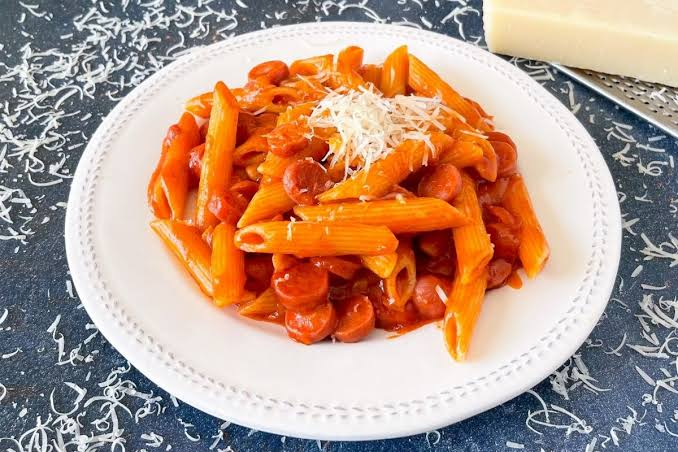

Pizza casera
Una pizza sencilla que puedes preparar con ingredientes
que normalmente tienes en casa.
Ingredientes:
- Harina
- Queso
- Salsa de tomate
- Jamón
- Orégano
Preparación:
- Preparar la masa.
- Agregar la salsa de tomate.
- Añadir queso y demás ingredientes.
- Hornear durante 15-20 minutos.

Ensalada saludable
Una ensalada fresca, saludable y rápida para acompañar
cualquier comida.
Ingredientes:
- Lechuga
- Tomate
- Pepino
- Zanahoria
- Limón
Preparación:
- Lavar todos los vegetales.
- Cortar los ingredientes.
- Mezclarlos en un recipiente.
- Agregar limón al gusto.

Pasta con tomate
Una receta clásica y económica para disfrutar de una
comida deliciosa.
Ingredientes:
- Pasta
- Tomate
- Ajo
- Aceite de oliva
- Queso parmesano
Preparación:
- Cocinar la pasta.
- Preparar la salsa de tomate.
- Mezclar la pasta con la salsa.
- Agregar queso al servir.